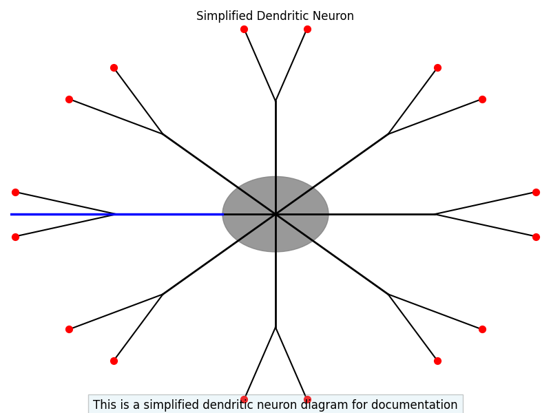

Dendritic Modeling Framework


A PyTorch-based framework for biologically-inspired neural networks with dendritic computation.
Key Features
Dendritic Computation: Implements shunting inhibition and multi-branch dendritic processing
E/I Networks: Separate excitatory and inhibitory pathways with biologically-plausible connectivity
Sparse Connectivity: TopK and DEEPST algorithms for dynamic sparse connections
Vision Models: Pre-built units for Gabor filters, center-surround, and motion detection
Analysis Tools: Comprehensive suite for ablation, information theory, and synaptic dynamics
Quick Start
from dendritic_modeling.networks import ExcitationInhibitionNetwork
from dendritic_modeling.models import Classifier
# Create E/I network with dendritic branches
network = ExcitationInhibitionNetwork(
input_dim=784,
excitatory_layer_sizes=[100],
inhibitory_layer_sizes=[50],
excitatory_branch_factors=[2, 2],
use_shunting=True
)
# Wrap in classifier
model = Classifier(
encoder_network=None,
core_network=network,
decoder_network=None
)
Documentation
Core Components
- Networks
ExcitationInhibitionNetwork: Main E/I network architectureDendriticBranchLayer: Individual dendritic branch processingDendriNet: Multi-layer dendritic networkDendriteConv2d: Convolutional dendritic layer
- Models
Classifier: Classification wrapperRegressor: Regression wrapper
- Training
Trainer: Standard trainingLayerWiseTrainer: Layer-by-layer trainingLocalCreditAssignment: Local learning rules
- Analysis
AblationAnalyzer: Systematic ablation studiesInformationAnalyzer: Information-theoretic analysisSynapticTurnoverAnalyzer: Synaptic dynamics tracking